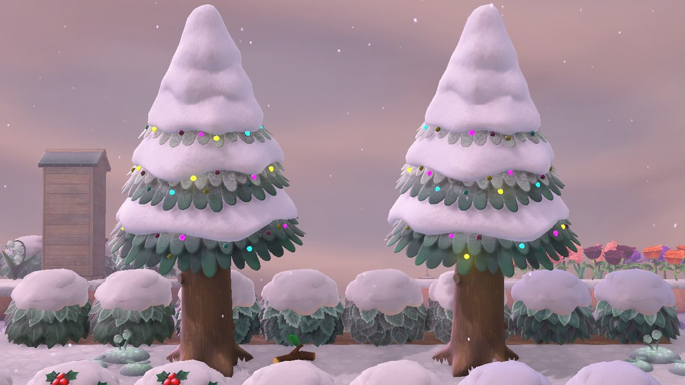

裝飾品季：12 月 15 日到 1 月 6 日，搖針葉樹
紅、藍、金三色裝飾品怎麼存，18 份聖誕DIY方程式，聖誕節前要留的那幾個
年底這段日子，島上的針葉樹會掛上彩燈和彩球。兩個半球都是 12 月 15 日到隔年 1 月 6 日，搖一搖針葉樹，就會掉下紅色、藍色、金色三種裝飾品。
裝飾品能做 18 份聖誕DIY：大型聖誕樹、樹型燈飾、特大裝飾……全做一遍要紅色 56 個、藍色 50 個、金色 48 個。12 月 24 日聖誕節還要用三色各 3 個做包裝紙，這幾個記得先留下來。

12 月 15 日起，針葉樹掛上了裝飾（圖：Nookipedia）
01什麼時候
裝飾品季跟著年底的節日走，不分南北半球，都是同一段日子。日期以遊戲裡的時間為準。
| 半球 | 開始 | 結束 |
| 北半球 | 12 月 15 日 | 隔年 1 月 6 日 |
| 南半球 | 12 月 15 日 | 隔年 1 月 6 日 |
北半球這時剛好遇上雪花季（12 月 11 日到 2 月 24 日），南半球則在夏天貝殼季（12 月 1 日到 2 月底）裡，可以一起存。
02怎麼搖
走到針葉樹前搖一搖，裝飾品就會掉下來，顏色是隨機的。金色最少見，紅色、藍色多一些。
裝飾品一個只賣 50 鈴錢，在口袋裡一格能疊 30 個。賣了不值得，全留著做家具。
注意搖針葉樹也可能掉下蜂巢，黃蜂會追著叮人。搖樹前先把捕蟲網拿在手上，黃蜂一出來就能及時撈住。
小提示裝飾品能放進收納。季節快結束時多存一些收起來，過了季也能繼續做；這一季的DIY方程式沒學全也沒關係，以後學到了再拿出來用。
03DIY方程式從哪來
射氣球：裝飾品季裡飄過的氣球，射下來會掉聖誕的DIY方程式。
去島民家拜訪：這段時間島民在家做 DIY，做的大多是聖誕家具，遇到了就跟著學。要是那份你已經學過，島民就不教了，改送你 3 個隨機顏色的裝飾品。
12 月 15 日的西施惠：裝飾品季第一天，西施惠會送你一份「裝飾花圈」。
12 月 24 日的鈴鈴鹿：聖誕節當天，鈴鈴鹿會教你「聖誕包裝紙」，這份不在下面的 18 份裡，當天的玩法見我們的聖誕節攻略。
0418 份DIY方程式一覽
| DIY方程式 | 材料 |
| 裝飾花圈 12 月 15 日西施惠送 | 藍色裝飾品 6、金色裝飾品 2 |
| 大型聖誕樹 | 紅色裝飾品 6、藍色裝飾品 6、金色裝飾品 4、木材 5、黏土 5 |
| 可愛聖誕樹 | 紅色裝飾品 3、藍色裝飾品 3、金色裝飾品 2、木材 5 |
| 桌上聖誕樹 | 金色裝飾品 5、樹枝 3、黏土 2 |
| 裝飾樹 2.0 加入 | 紅色裝飾品 3、藍色裝飾品 2、金色裝飾品 1、鐵礦石 3 |
| 樹型燈飾 | 紅色裝飾品 8、藍色裝飾品 8、金色裝飾品 6、鐵礦石 6 |
| 禮物燈飾 | 紅色裝飾品 3、金色裝飾品 4、鐵礦石 3 |
| 馴鹿燈飾 | 金色裝飾品 6、鐵礦石 5 |
| 雪花燈飾 | 藍色裝飾品 9、鐵礦石 3 |
| 特大裝飾 2.0 加入 | 紅色裝飾品 10 |
| 裝飾串連掛飾 2.0 加入 | 紅色裝飾品 2、藍色裝飾品 2、金色裝飾品 2、鐵礦石 5 |
| 掛飾 | 紅色裝飾品 1、藍色裝飾品 1、金色裝飾品 1、樹枝 4 |
| 裝飾桌燈 2.0 加入 | 紅色裝飾品 2、鐵礦石 2 |
| 聖誕蠟燭 | 紅色裝飾品 5、雜草 5 |
| 節日陀螺 | 金色裝飾品 2、硬木材 1 |
| 聖誕牆 | 紅色裝飾品 5、藍色裝飾品 5、金色裝飾品 5、黏土 5 |
| 聖誕節地毯 1.6 加入 | 紅色裝飾品 5、藍色裝飾品 5、金色裝飾品 5 |
| 裝飾花冠 2.0 加入 | 紅色裝飾品 3、藍色裝飾品 3、金色裝飾品 3 |
18 份全做一遍，要紅色裝飾品 56 個、藍色 50 個、金色 48 個，另外還要鐵礦石 27、黏土 12、木材 10、樹枝 7、雜草 5、硬木材 1。
05聖誕節前先留 9 個
12 月 24 日鈴鈴鹿會請你做 3 張聖誕包裝紙，每張要紅、藍、金各 1 個，一共是三色各 3 個。24 日之前先把這 9 個收進收納，別拿去做家具。
金色最容易不夠：大型聖誕樹要 4 個、樹型燈飾要 6 個、馴鹿燈飾要 6 個。搖到的金色先留 3 個給包裝紙，多出來的再拿去做家具。
06先做哪幾件
大型聖誕樹：2×2 格的大聖誕樹，擺在廣場上最有節日氣氛，要紅 6、藍 6、金 4，另加木材、黏土各 5。
特大裝飾：只要 10 個紅色裝飾品，紅色搖到太多正好用它消耗。
裝飾桌燈：紅色 2 個、鐵礦石 2 個，最便宜的一份，擺在屋裡當小燈。
裝飾花冠：能戴在頭上的花冠，三色各 3 個。
聖誕節地毯：4×4 格的大地毯，三色各 5 個。
這一季的聖誕家具大多做出來還能改造換顏色。

聖誕家具布置的房間（圖：Nookipedia）
07版本變化
聖誕節地毯這份DIY方程式是 1.6 加入的；特大裝飾、裝飾花冠、裝飾串連掛飾、裝飾桌燈、裝飾樹是 2.0 加入的。也是 2.0 起，島民正在做的聖誕DIY方程式要是你已經學過，就改送 3 個隨機顏色的裝飾品。3.0 的更新說明裡沒提到裝飾品季有改動。
動森圈圈 · iOS App 和微信小程式都搜「動森圈圈」